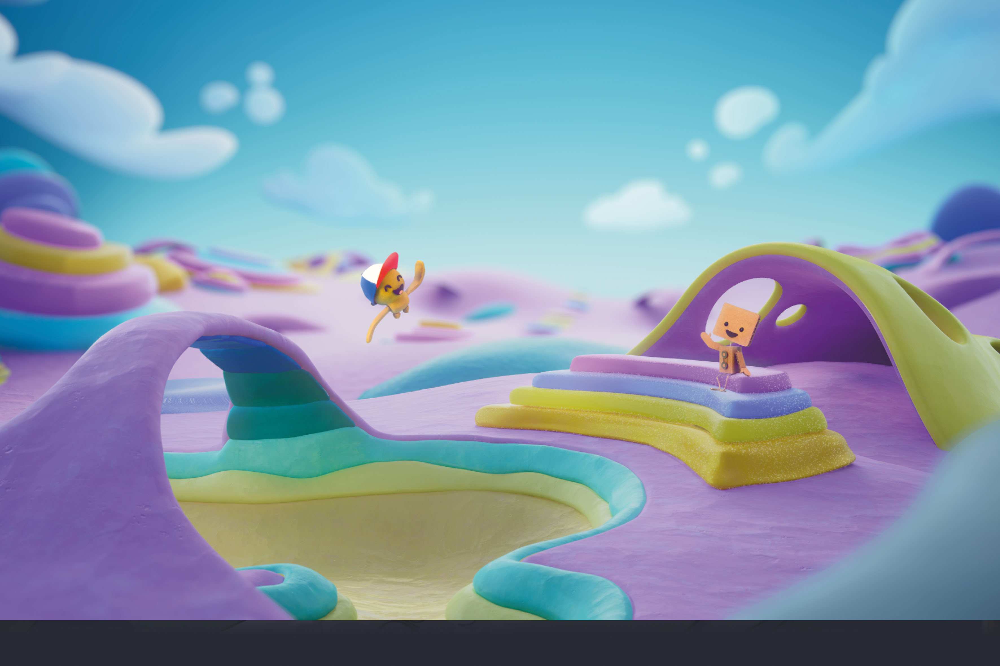

Ori y Gen

ORI & GEN viven cada día como una aventura. Uno es de goma y otro de cartón, cuando algo en el escritorio donde viven cobra vida, juntos generan un portal perfecto para llegar a mundos impensados. Si el material es de hierro será el mundo de los metales, si es de papel será dónde este se acumula y produce; los mundos son tan posibles como los objetos con los que habitan. En cada viaje conocen los secretos y magias de la materialidad que les rodea.
Mix media (Stopmotion, 2D y fondos 3D)
Serie animada de 13 episodios de 5 minutos de duración.
Target: 3 a 6 años de edad.
Género: Comedia / Aventura.
Estado: Desarrollo
Idea Original: Luz Márquez - Javier Luna Crook
Guion: Luz Marquez - Juan Manuel Costa
Dirección: Javier Luna Crook - Juan Manuel Costa
Producción Ejecutiva: Fernanda Torrera - Romina Savary
Dirección de Arte: Verónica Arcodaci
Ilustración Concepts Art: Estudio Ilusionario
Arte 3D: Nicolas Claisse y Julieta Belgorodsky
Diseño Sonoro y Música Original: Delight Sound Studio